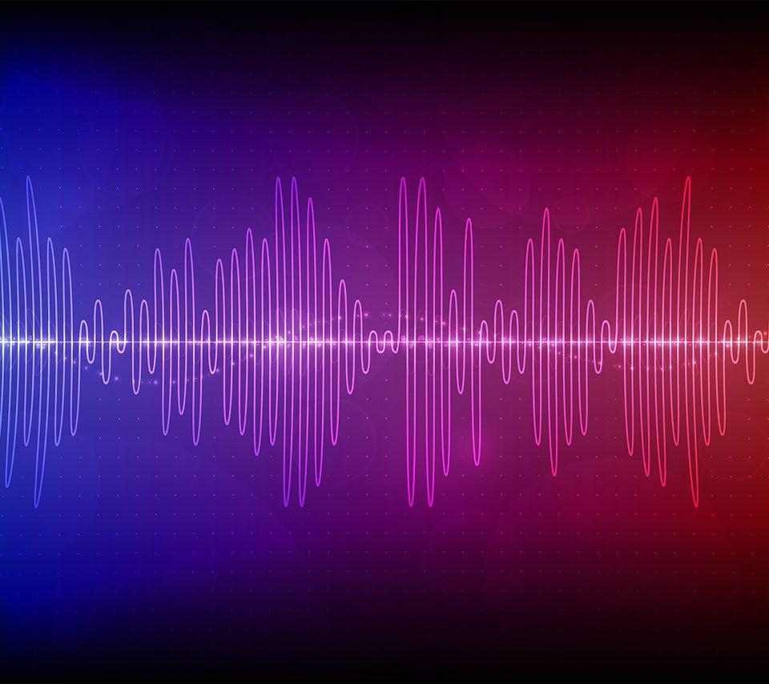

Quem somos
Beats, é fácil encontrar a música ou podcast ideal para cada momento, seja no celular, no computador, no tablet ou em outros dispositivos.
O Beats tem milhões de músicas e episódios de podcasts, o que significa que você sempre pode encontrar algo ótimo para ouvir, tanto se estiver ao volante ou na academia como em clima de festa ou relaxando em casa. Escolha o que você quer escutar ou deixe-se surpreender pelo Beats.